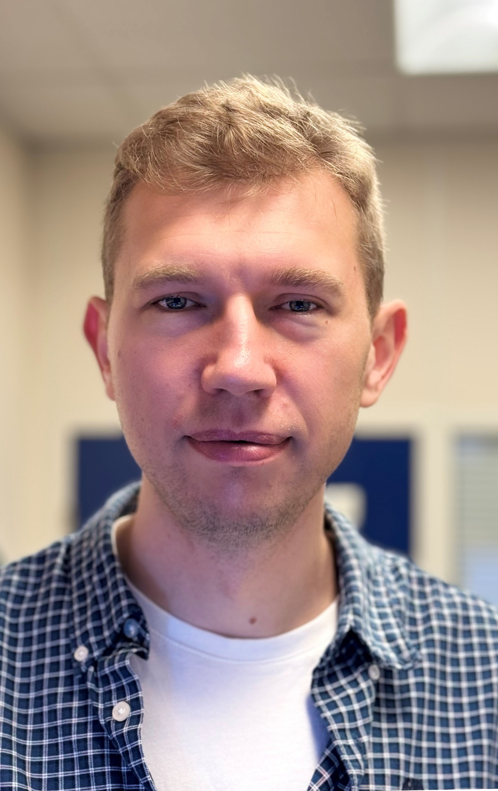

Team
Principal Investigator
photo

Dr Roman Fedoryshchak
Prize Fellow in Drug Discovery, University of Bath
Prize Fellow in Drug Discovery, University of Bath
Roman trained as a chemist in Kyiv (BSc, Taras Shevchenko National University) and at the École Normale Supérieure de Lyon (MSc), then completed a Marie Curie PhD in Chemical Biology with Prof. Ed Tate at Imperial College London, developing photoaffinity probes for protein myristoylation. As a postdoctoral fellow with Sir Richard Treisman at the Francis Crick Institute (2018–2025) he studied how PP1 phosphatase holoenzymes recognise substrates, built a FRET biosensor for G-actin, and led early drug discovery against PP1–Phactr1.
Current members
The group is just starting. Join in!